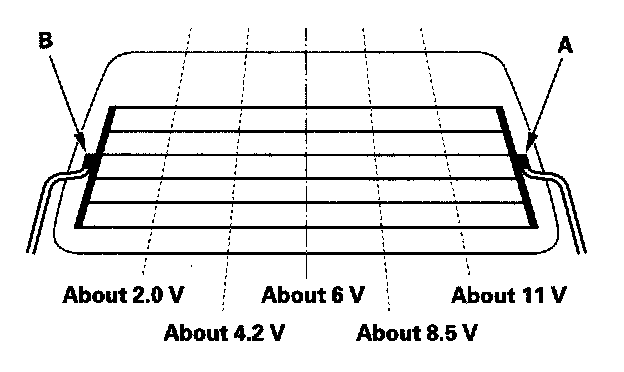

Heated Glass Element: Testing and Inspection
Rear Window DefoggerFunction Test
Before troubleshooting the rear window defogger circuit, perform multiplex integrated control system troubleshooting using B-CAN System Diagnosis Test Mode A.
NOTE:
- Be careful not to scratch or damage the defogger wires with the tester probe.
- Before testing, check the No. 30 (10 A) fuse in the under-dash fuse/relay box and the No. 10 (30 A) fuse in the rear fuse/relay box.

1. Measure the voltage between the positive terminal (A) and body ground with the ignition switch and defogger switch ON.
There should be battery voltage.
- If there is no voltage, check for:
- Faulty rear window defogger relay.
- Faulty rear MICU.
- Faulty climate control unit.
- An open in the RED wire to the positive terminal.
- If there is voltage, go to step 2.
2. Disconnect the negative terminal (B) from the rear window defogger.
3. Check for continuity between the negative terminal and body ground.
If there is no continuity, check for an open in the wire or poor ground (G701). If there is continuity, go to step 4.
4. Reconnect the negative terminal to the rear window defogger.
5. Turn the ignition switch ON (II) and the rear window defogger switch ON.
6. Touch the voltmeter positive probe to the each points on each defogger wire, and the negative probe to the negative terminal.
- If the voltage is as specified, the defogger wire up to that point is OK.
- If the voltage is not as specified, repair the defogger wire.